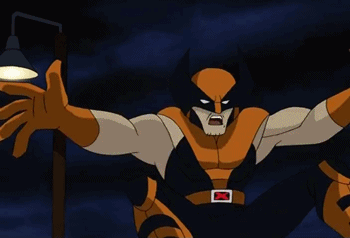
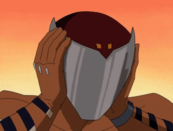
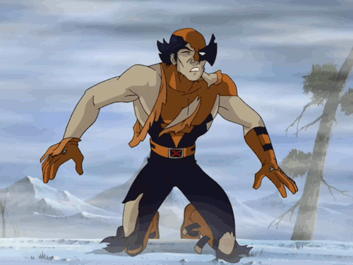
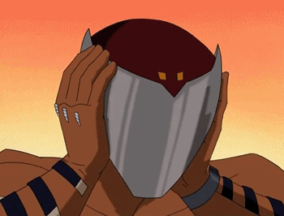
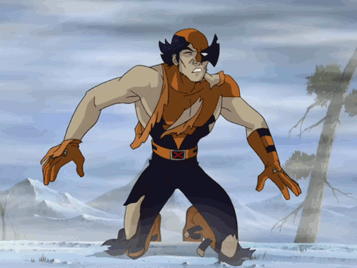
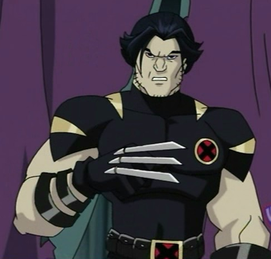
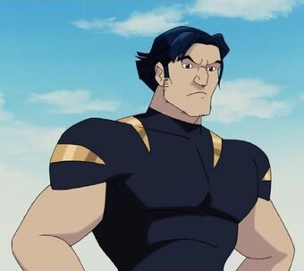

Wolverine
Mais tarde, foi descoberto que o projeto Arma-X havia colocado um dispositivo na cabeça de Logan que permitia que eles o controlassem e seu nível de raiva. Este evento levou à curta equipe de Wolverine e Dentes de Sabre, e os dois atacaram os jovens X-Men, Nightcrawler e Shadowcat . Eles acompanharam Logan ao deserto canadense para encontrar a fonte de sua raiva crescente. Posteriormente, Logan foi capaz de lutar contra o dispositivo, e Shadowcat causou um curto-circuito nos sistemas de computador da Arma-X, fazendo com que toda a base explodisse. Atualmente, Wolverine trabalha na Escola Xavier para Jovens Superdotados, ajudando os novatos X-Men a serem capazes de compreender e controlar seus poderes, enquanto ele tenta juntar os pedaços de sua psique fragmentada. Isso é quando Logan não está em algum lugar violando as leis de velocidade em sua motocicleta reformada.

 



Personalidade
Wolverine é um homem muito obstinado e obstinado. Apesar do fato de que ele pode ser insensível, ele é na verdade uma pessoa muito atenciosa, leal e abnegada. Ele está sempre disposto a defender quem precisa, X-23 , Charles , Spyke e qualquer outro.
Apesar de seu temperamento e atribuições violentas, ele tenta controlá-los e ensinar aos 'jovens' que a violência não é a melhor opção, mas que às vezes é necessária e às vezes é o único caminho. Ele é muito parecido com sua versão de quadrinhos. Ele parece considerar Kitty e X-23 como filhas, então pode ver os X-Men como uma família inteira. Wolverine é conhecido por ser muito sarcástico, apontar o óbvio e ser extremamente direto. Embora prefira ficar sozinho, ele gosta da companhia de quem gosta e às vezes pode ficar nervoso quando recebe um trabalho no qual sente que não se destaca.

Logan é muito possessivo com sua motocicleta a ponto de ser facilmente provocado quando sua segurança é ameaçada, normalmente pelas travessuras dos jovens mutantes.
Pouco se sabe sobre o feral X-Man chamado Wolverine. Sua cura acelerada torna impossível determinar sua idade. Rumores abundam em teorias sobre o que ele fez e passou, muitos deles originados de suas próprias memórias adulteradas. É sabido que na Segunda Guerra Mundial ele lutou ao lado do Capitão América , protegendo as tropas aliadas e também libertando as detidas pelas SS nazistas. Quando os dois invadiram Auschwitz , a primeira pessoa que resgataram foi um menino chamado Erik Lensherr.
Então, em meados dos anos 60, ele foi um dos muitos sujeitos de um experimento cruel conhecido como Arma-X. Durante este projeto, ele trabalhou com um homem que se tornaria seu maior rival, conhecido como Dentes de Sabre. A rivalidade entre os dois é tão violenta, que uma vez Dentes de Sabre pensou que seria o destino que um dos dois destruiria o outro.

Home